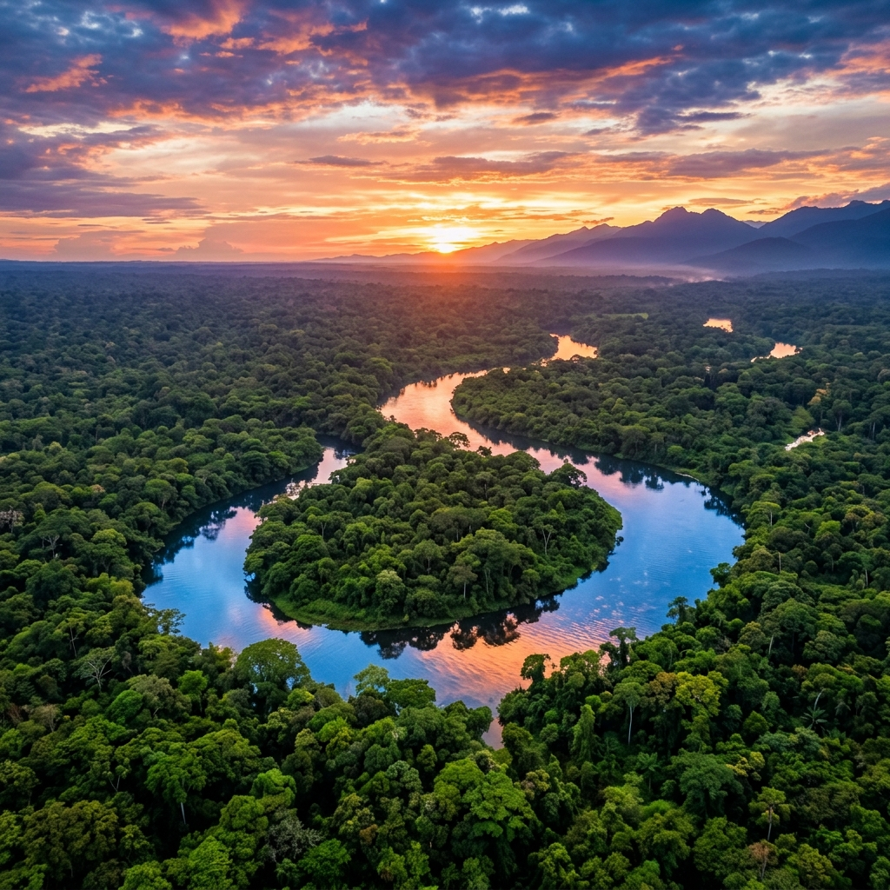

All About Us
Jungle Trips from Cusco with a Local Travel Agency, Peru

Indigenous Experts at the Helm
Guardians of the Rainforest
Our team, directed by Jordy, is born and raised in the jungle. They possess an intimate, generational knowledge of the flora, fauna, and shifting river currents, ensuring your expedition is both thrilling and completely safe.
We operate with a strict eco-friendly mandate. Every tour directly funds local conservation initiatives and provides sustainable income for remote communities, acting as a bulwark against deforestation.
Overland Journey
Expert NavigationThe descent from the Andes into the Amazon basin is spectacular. We utilize a fleet of rigorously maintained, private 4x4 vehicles. Our veteran drivers navigate the winding mountain passes with absolute precision, stopping at key viewpoints in the cloud forest.
River Navigation
The rivers are the highways of the Amazon. You will cruise the Madre de Dios in our robust, motorized longboats, designed for stability and maximum visibility. This is your first real opportunity to spot river turtles, caimans, and exotic birds along the banks.
Eco-Lodge Stays
Our network of partner lodges provides a comfortable sanctuary amidst the wild. Built from sustainable materials, they blend into the canopy. You will sleep under protective mosquito netting, with access to essential amenities and basic running water.
Jungle Bungalows
Deep in the reserve, these rustic bungalows serve as our strategic basecamp. Surrounded by the cacophony of nocturnal insects and distant howler monkeys, you will experience true immersion without sacrificing safety or basic comforts.
Our Private Outpost
Located on our ancestral lands, this exclusive outpost offers an intimate look into native life. Far removed from standard tourist routes, it features traditional architecture and direct access to pristine, unexplored trail systems.
Canopy Camping
For the ultimate adventurer, we offer open-air sleeping platforms deep in the forest. Elevated off the ground and fully netted, you can safely watch the stars and listen to the breathing of the jungle around you.
Food
You will enjoy freshly prepared, full meals on each day of the trip. Our team of chefs can tailor the menu of a group or individual travler to any dietary requirement from vegan to celiac, or any allergy. We only use clean bottled water at every step of the food preparation process. Plus, every meal will be absolutely delicious!
Community & Conservation
Tourism is Helping the Village and the WildlifeWe are certain that tourism is the healthiest, most positive industry in the rainforest. The LLaqui family owns a piece of land that we use for trails, lodges, and the camouflage house. It is the only piece of land in the area being used for conservation, and we can feel the benefits of our protection of this land by the flora and fauna. Each traveler who visits Nuevo Eden is helping us with this small conservation project, and as we grow, we are dedicated to helping the community and nature in more ways as well.
Manu National Park, Peru
Cultural Zone, Reserved Zone & BlanquilloThe Manu National Park is an enormous place that spans 4 distinct regions: the high mountains, (Ajanaco) the Cloud Forest, the High Jungle (Patria & Machu Wasi) and the Low Jungle (Nuevo Eden, the Reserved Zone, and Blanquillo)
Based on your budget, trip length, and interests, we can’t wait to share the biodiversity, natural wonders, flavors, and local culture of the Manu National Park with you.
Vamos a la selva!
Our Story
Jordy Leonidas LLaqui
Principal Tour GuideHe was born on August 1994 and grew up in the Manu National Park. He and his family used the abundant resources around them to live and prosper in the jungle, embracing the nature around them, and learning how to navigate the challenges as well. He went to primary school in the area, then moved to Cusco where he studied Tourism at the Instituto Americana de Turismo. As a jungle specialist, Jordy is very knowledgeable about the many species of birds in Peru, animals, plants, insects, and all wildlife. His goal is help to conserve and preserve the jungle and is passionate about sharing and teaching people about nature and the world in Manu National Park.
Gloria
Administration & Adventure CoordinatorGloria is a passionate advocate for the Peruvian Amazon, deeply connected to the natural wonders of the Manu region. Growing up surrounded by the rich biodiversity of the cloud forest, she developed an early love for nature and a strong commitment to its preservation.
With years of experience in eco-tourism, Gloria now coordinates all adventures for Manu Jungle Forever. Her meticulous planning ensures that every traveler enjoys a safe, seamless, and authentic experience while respecting the delicate balance of the rainforest. She believes that tourism, when done right, is the ultimate tool for conservation.